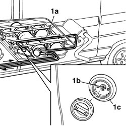
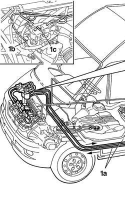
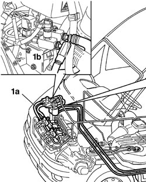
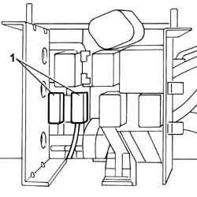

1043A02 LPG SYSTEM LINES PIPE DRAINING OPERATIONS
- Path
- Procedures > 10 ENGINE UNIT > 1043 GPL TANK AND PIPES > 1043A GPL TANK > 1043A02 LPG SYSTEM LINES PIPE DRAINING OPERATIONS
- Kind
- repair procedure (removal / refitting; the operation number is the code)
- Applies to
- engines: 2.0 16V; all production periods
- Interactive page
- https://sloeber94.github.io/elrnDB-fDct/en/#/244002615
Applies to: engines: 2.0 16V; all production periods
In the case of LPG system components maintenance or replacement operations that involve disconnecting the pipes, the section of the circuit involved must be bled following the instructions below.
Take the vehicle outside the workshop to an open area and position at a minimum safety distance of 4 metres from other vehicles and from electrical systems and equipment.
Wear the special helmet with visor and heavy-duty gloves illustrated previously that meet the UNI standards listed (see ASSEMBLY 10 index).
Wait for the engine to cool down.
1. In the case of operations to the components in section (1a) (from the filler to the tank) of the LPG circuit, drain the pipe by pressing at the single-acting valve (1b) on the LPG filler (1c).

Applies to: engines: 2.0 16V; all production periods
1. In the case of repairs to section (1a) (from the tank to the solenoid valve assembly / G4-G5) of the LPG circuit, drain the LPG in the supply and return pipes to the solenoid valve assembly / G4-G5 using the connectors (1b) and (1c).

Applies to: engines: 2.0 16V; all production periods
1. In the case of repairs to components in section (1a) (from the solenoid valve assembly / G4-G5 to the injectors) of the LPG circuit, drain the LPG in the supply pipe to the injectors via the connector (1b).

Applies to: engines: 2.0 16V; all production periods
Once the section of pipe concerned has been drained, wait for at least 5 minutes before returning the vehicle to the workshop.
1. Disconnect 5A fuse F01 and 15A fuse F03 protecting the solenoid valves and the LPG pump (taking great care over the original position) to prevent the engine from being started up in LPG mode with the consequent filling of the pipes.

Applies to: engines: 2.0 16V; all production periods
Return the vehicle to the workshop (in petrol operating mode) and proceed with the necessary removal operations.
Topics that link to this page (14)
- 1043A06 GPL TANK COMPLETE WITH SUBMERGED FUEL TANK AND VALVE UNIT R R
- 1043A30 GPL FILLER FITTING R R
- 1043A34 FILLER PIPE FROM FITTING TO GPL TANK R R
- 1043B11 RIDIG DELIVERY PIPE FROM SOLENOID VALVE TO PRESSURE FITTING/SENSOR - R.R.
- 1043B12 RIGID RETURN PIPE FROM SOLENOID VALVE TO FITTING
- 1043B13 FLEXIBLE DELIVERY PIPE FROM FITTING TO INJECTORS - R.R.
- 1043B14 FLEXIBLE RETURN PIPE FROM FITTING TO INJECTORS RIGID PIPE -R.R.
- 1043B15 INJECTORS RIGID RETURN PIPE - R.R.
- 1043B16 RIGID DELIVERY AND RETURN PIPE FROM INTERMEDIATE FITTING TO SOLENOID VALVE - R.R.
- 1043B21 INJECTORS GPL RETURN PIPE FITTING - R.R.
- 1043B22 FITTING WITH PRESSURE SENSOR ON DELIVERY PIPE TO INJECTORS - R.R.
- 1043B42 PRESSURE REGULATON FOR GPL SUPPLY COMPLETE WITH DELIVERY AND RETURN LINES FROM INTERMEDIATE CONNECTOR R R
- 1043B47 DELIVERY OR RETURN (ONE) SOLENOID VALVE - R.R.
- 1057B66 GPL INJECTOR UNIT WITH CONNECTION PIPES TO PRESSURE REGULATOR R R